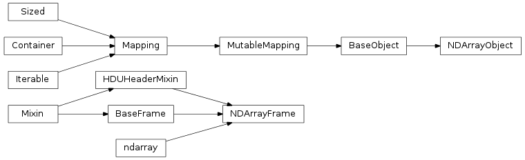

This module implements a frame as a subclass of NDArray. This eliminates the difference between the d attribute and the f.

This object tracks a number of data frames. This class is a simple subclass of AstroObjectBase.BaseObject and usese all of the special methods implemented in that base class. This object sets up an image object class which has two special features. First, it uses only the NDArrayFrame class for data. As well, it accepts an array in the initializer that will be saved immediately.
A frame based on np.ndarray
Plots the image in this frame using matplotlib’s imshow function. The color map is set to an inverted binary, as is often useful when looking at astronomical images. The figure object is returned, and can be manipulated further.
Note
This function serves as a quick view of the current state of the frame. It is not intended for robust plotting support, as that can be easily accomplished using matplotlib. Rather, it attempts to do the minimum possible to create an acceptable image for immediate inspection.